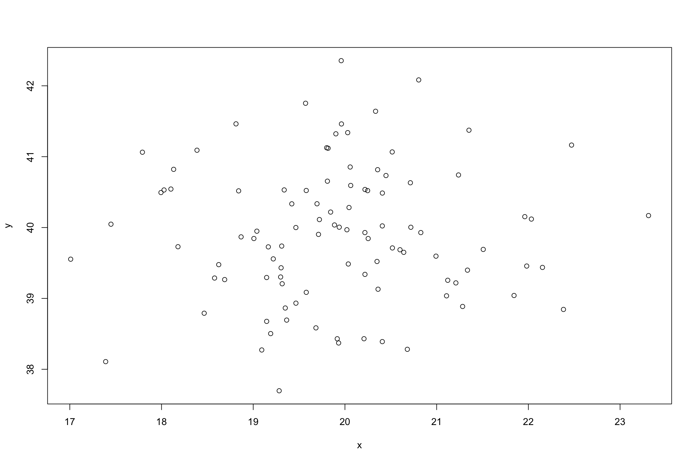
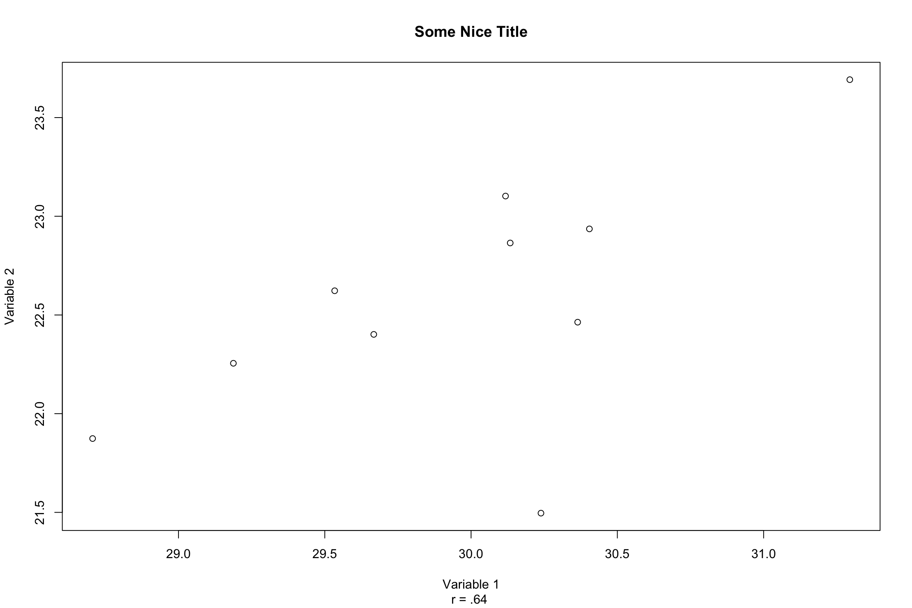
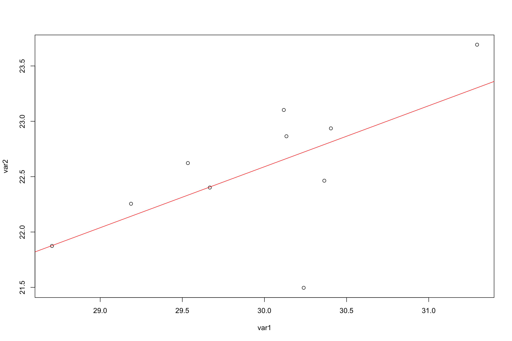
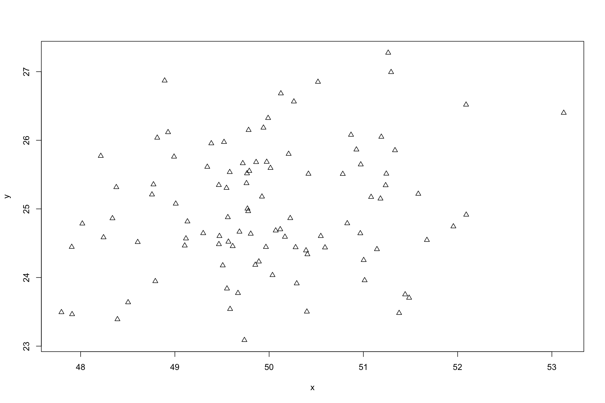
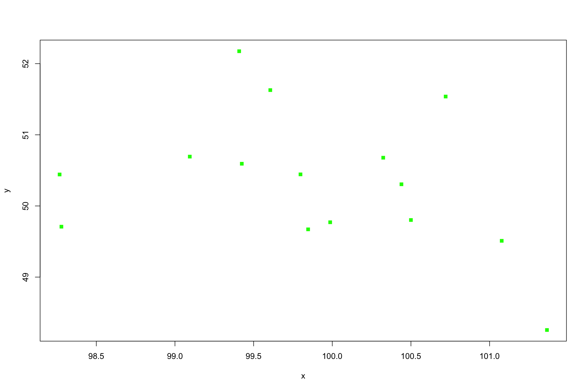
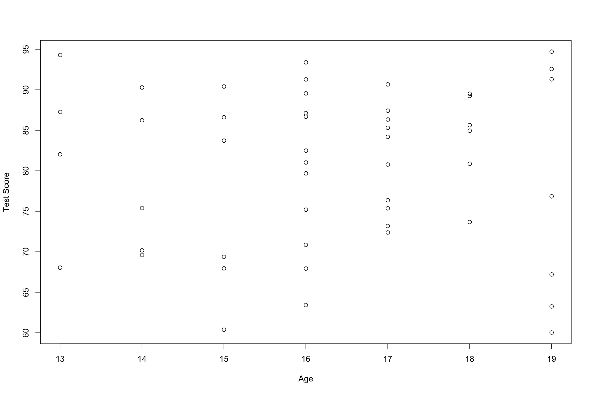
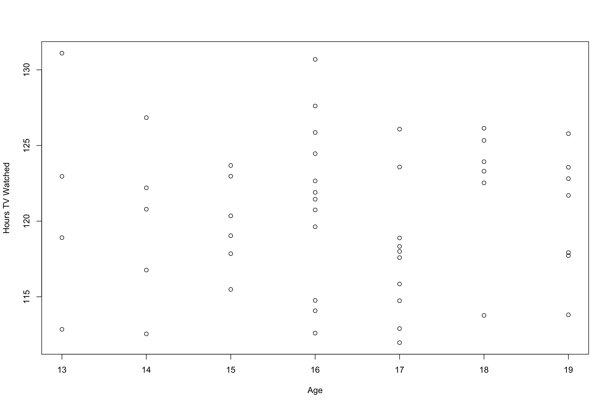
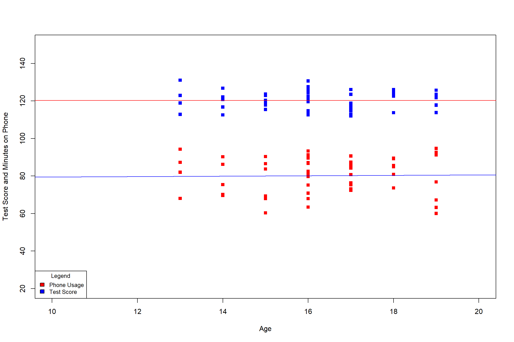

Additions to Linear Regression
In last weeks lecture we discussed how to create the regression line. If we are trying to predict Y given X, we can plug a value in for X and the output we get should be the predicted Y value.
Is this prediction perfect?
The regression line is created by the points you have in your dataset, but, keep in mind that the relationships in your datasets are not always perfect in nature. As such, there is an error of the prediction that can be computed. The textbook likens this error to the standard deviation, and you will see that the formula is quite similar as well.
\(s_{Y|X} = \sqrt{\frac{\sum(Y-Y')^2}{N-2}}\)
The expanded formula looks like:
\(s_{Y|X} = \sqrt{\frac{[\sum(XY)-(\sum X)(\sum Y^2/N]^2}{N-2}}\)
Luckily for us, we can use R to find out the standard error through the use of the summary() function.
set.seed(91)
x=rnorm(100,20)
y=rnorm(100,40)
plot(x,y)
xy.mod<-lm(y~x)
stder=2*sd(residuals(xy.mod))/sqrt(100)
stder[1] 0.1898251summary(xy.mod)
Call:
lm(formula = y ~ x)
Residuals:
Min 1Q Median 3Q Max
-2.19624 -0.59849 -0.00488 0.64597 2.44247
Coefficients:
Estimate Std. Error t value Pr(>|t|)
(Intercept) 39.34739 1.64687 23.892 <2e-16 ***
x 0.02830 0.08255 0.343 0.733
---
Signif. codes: 0 '***' 0.001 '**' 0.01 '*' 0.05 '.' 0.1 ' ' 1
Residual standard error: 0.954 on 98 degrees of freedom
Multiple R-squared: 0.001197, Adjusted R-squared: -0.008995
F-statistic: 0.1175 on 1 and 98 DF, p-value: 0.7325Graphical Additions
We have already seen the basics of using graphics to visualize our data with functons such as plot() and hist().Additionally, we have seen that we can do certain things to clean-up our visualizations such as providing titles and captions through the use of main="Title", sub="Caption" and respectively, adding axis lables with xlab="X", ylab="Y". `
We have also seen how to draw a line through the points that would best explain the relationship present if any, in the dat through the use of abline(a=,b=).
set.seed(105)
var1=rnorm(10,30)
var2=rnorm(10,23)
plot(var1,var2,main="Some Nice Title",xlab = "Variable 1",ylab="Variable 2", sub="r = .64 " )
var.mod<-lm(var2~var1)
summary(var.mod)
Call:
lm(formula = var2 ~ var1)
Residuals:
Min 1Q Median 3Q Max
-1.22571 -0.00482 0.11789 0.26722 0.44729
Coefficients:
Estimate Std. Error t value Pr(>|t|)
(Intercept) 6.0602 7.0975 0.854 0.4180
var1 0.5510 0.2368 2.327 0.0484 *
---
Signif. codes: 0 '***' 0.001 '**' 0.01 '*' 0.05 '.' 0.1 ' ' 1
Residual standard error: 0.5139 on 8 degrees of freedom
Multiple R-squared: 0.4036, Adjusted R-squared: 0.3291
F-statistic: 5.414 on 1 and 8 DF, p-value: 0.0484We can tell that this line is equal to: \(Y= 6.060 + .551\)
In our discussion on linear regressin we discussed how to add the line of best fit through the use of the abline() function.
plot(var1,var2)
abline(a=6.060,b=.551,col="red")
Additionally, we can color the line through the use of col=" ". R has quite the selection of colors available to you. The colors() function, you will see an output of 657 possible colors. Here are just a few:
cl=colors()
sample(cl,5)[1] "dodgerblue1" "grey58" "grey38" "lemonchiffon"
[5] "violetred4" If you can think of a color, there is a name for it in R (most likely!)
Now that we have colors nailed down, we can mention point characters, or as they are called in R pch=. This function will allow you to change how a point looks. Here is an example:
set.seed(71)
x=rnorm(100,50)
y=rnorm(100,25)
plot(x,y,pch=2) Here is an image of some of the possible choices you will can use. 
If I wanted to plot a graph with green, filled in squares, I would do this:
set.seed(60)
x=rnorm(15,100);y=rnorm(15,50)
plot(x,y,col="green",pch=15)
Okay, so we can add colors and shapes to our graphs. So what? What if we wanted to display certain information in a certain way, or what if we wanted to separate our data in some distinguishing way?
If you are presented with a dataset with more than one independent variable, it can be difficult to discern any relationship when you have to graph it twice. Additionally we will calculate the linerar regression summaries of each independent vairables:
set.seed(10)
Attention_Experiment<-data.frame(Age=round(rnorm(50,17,2),digits = 0),Minutes_Phone=round(rnorm(50,120,5),digits=2),Test_Score=round(rnorm(50,80,10),digits=2))
plot(Attention_Experiment$Test_Score~Attention_Experiment$Age,xlab="Age",ylab="Test Score")
plot(Attention_Experiment$Minutes_Phone~Attention_Experiment$Age,xlab="Age",ylab="Hours TV Watched")
Test_Age.mod<-lm(Attention_Experiment$Test_Score~Attention_Experiment$Age)
Phone_Use.mod<-lm(Attention_Experiment$Minutes_Phone~Attention_Experiment$Age)
summary(Test_Age.mod)
Call:
lm(formula = Attention_Experiment$Test_Score ~ Attention_Experiment$Age)
Residuals:
Min 1Q Median 3Q Max
-20.509 -7.738 2.219 7.314 14.414
Coefficients:
Estimate Std. Error t value Pr(>|t|)
(Intercept) 78.4391 12.9521 6.056 2.06e-07 ***
Attention_Experiment$Age 0.1105 0.7900 0.140 0.889
---
Signif. codes: 0 '***' 0.001 '**' 0.01 '*' 0.05 '.' 0.1 ' ' 1
Residual standard error: 9.82 on 48 degrees of freedom
Multiple R-squared: 0.0004075, Adjusted R-squared: -0.02042
F-statistic: 0.01957 on 1 and 48 DF, p-value: 0.8893summary(Phone_Use.mod)
Call:
lm(formula = Attention_Experiment$Minutes_Phone ~ Attention_Experiment$Age)
Residuals:
Min 1Q Median 3Q Max
-8.3595 -3.3896 0.4043 3.2590 10.7080
Coefficients:
Estimate Std. Error t value Pr(>|t|)
(Intercept) 120.59529 6.50609 18.536 <2e-16 ***
Attention_Experiment$Age -0.01564 0.39685 -0.039 0.969
---
Signif. codes: 0 '***' 0.001 '**' 0.01 '*' 0.05 '.' 0.1 ' ' 1
Residual standard error: 4.933 on 48 degrees of freedom
Multiple R-squared: 3.235e-05, Adjusted R-squared: -0.0208
F-statistic: 0.001553 on 1 and 48 DF, p-value: 0.9687We could take the correlation using cor() and see what the value of R-Squared was and keep looking back and forth, but there is a (somewhat) easier way!
For this we wil be introducing three new functions: points(), xlim=',ylim=,andhead()`.
First: head() will show us a preview of our data, from here we can see where the values tend to lie, and get an idea of where our axes should be.
head(Attention_Experiment,10) Age Minutes_Phone Test_Score
1 17 118.00 72.38
2 17 118.33 84.19
3 14 126.84 69.60
4 16 130.69 87.12
5 18 122.53 73.67
6 18 123.93 85.63
7 15 115.49 86.61
8 16 122.66 63.42
9 14 116.77 90.28
10 16 121.45 91.28Age has a minimum of 14 and a maximum of 18.Hours Watched has a minumum of 5.05 and maximum of 7.10. Test Score has a minumum of 58.81 and a maximum of 78.98.
We can use this information to create our new axis limits using xlim and ylim. Additionally. the points() function will be used in order to plot additional variables onto the existing plot. Finaly, we will use abline() to draw the line of best fit for each dataset.
plot(Attention_Experiment$Test_Score~Attention_Experiment$Age,xlab="Age",ylab="Test Score and Minutes on Phone",xlim=c(10,20),ylim=c(20,150),col="red",pch=15)
points(Attention_Experiment$Minutes_Phone~Attention_Experiment$Age,xlab="Age",ylab="Hours TV Watched",xlim=c(10,20),ylim=c(20,150),col="blue",pch=15)
legend("bottomleft",title="Legend",c("Phone Usage","Test Score"),fill=c("red","blue"),cex = .8)
abline(Test_Age.mod,col="blue")
abline(Phone_Use.mod,col="red") That was a lot to squeeze into two lines so let’s just go over it one last time.
plot()Draw a graph of your points, it accepts the following inputs:x,y:The independent and dependent variable you are interested inmain =,xlab =,ylab =,sub =: Title, x-axis lable, y-axis label, and caption.xlim =,ylim =: These set parameters for the graph that will be drawn.col =: Designates a desired color for the lines, and points that will be drawn.pch =: Point character, assigns shape for points drawn.
points(): Plot additional points on an existing graph with pre-defined graphical parameters.